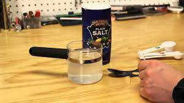

Saline

Description
Saline solution is a mixture of salt and water. Normal saline solution contains 0.9 percent sodium chloride (salt), which is similar to the sodium concentration in blood and tears. Saline solution is usually called normal saline, but its sometimes referred to as physiological or isotonic saline.
Saline has many uses in medicine. Its used to clean wounds, clear sinuses, and treat dehydration. It can be applied topically or used intravenously. Saline solution is available at your local pharmacy, but it can also be made at home. Read on to learn how you can save money by making your own saline.
What You'll Need
- 2 Cups Water
- 1 tsp Salt (Iodine Free)
- Microwave-Safe Bowl
- Clean Jar
Directions
- Boil water covered for 15 minutes.
- Allow to cool to room temperature.
- Add salt.
- Stir until dissolved.
- Refrigerate in airtight container for up to 24 hours. (After that, it should be discarded.)